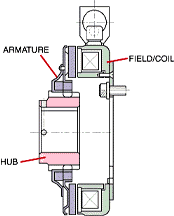
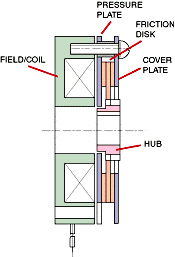

Introduction
Electromagnetic braking systems offer an innovative approach to slowing down or stopping machinery without relying on traditional friction-based methods. In this section, we explore the fundamental concepts behind electromagnetic brakes.
Electromagnetic brakes operate without physical contact, using magnetic flux to slow down or stop machinery. Unlike traditional friction-based brakes, they generate no heat and experience minimal wear. These systems find applications in automobiles, industrial machinery, and elevators, offering precise control and safety
Working Principle
Understanding how electromagnetic braking works is essential for designing efficient systems.
The working principle of electromagnetic braking involves the conversion of kinetic energy into thermal energy without relying on traditional friction-based methods. Here’s how it works:
Frictionless Concept:
- Electromagnetic brakes operate without physical contact.
- An electrical current passes through a coil, creating a magnetic field.
- This magnetic field interacts with a rotating disc or wheel.
Eddy Currents:
- The changing magnetic field induces eddy currents in the disc material.
- These eddy currents oppose the rotation, converting kinetic energy into heat.
Advantages:
- Heat reduction: No friction means no heat generation during braking.
- Wear-free operation: Minimal wear and tear on brake components.
- Precise control: Adjusting the electrical current fine-tunes braking force.
Components
These are the essential components of an electromagnetic braking system:
Stator:
- The stator is the stationary part of the brake system.
- It typically consists of an electromagnet (field coil) wound around a magnetic core.
- The stator generates the magnetic field necessary for braking.
Rotor (Armature):
- The rotor, also known as the armature, is the rotating part of the brake.
- It interacts with the stator’s magnetic field.
- When the brake is engaged, the rotor experiences mechanical resistance due to the induced eddy currents.
Friction Disc (Hub):
- The friction disc provides the surface for braking.
- It can be attached to a shaft or other rotating components.
- When the brake is activated, the friction disc experiences the braking force.
Coil Housing and Enclosure:
- The coil housing encloses the field coil and protects it from external elements.
- It ensures proper alignment and stability of the electromagnetic components.
Electrical Connections and Terminals:
- Wires connect the field coil to the power supply.
- Terminals allow for easy electrical connections during installation.
Types Of Electromagnetic Brakes
1. Single face brake
A friction-plate brake uses a single plate friction surface to engage the input and output members of the clutch. Single face electromagnetic brakes make up approximately 80% of all of the power applied brake applications.

2. Power off brake
Power off brakes stop or hold a load when electrical power is either accidentally lost or intentionally disconnected. In the past, some companies have referred to these as "fail safe" brakes. These brakes are typically used on or near an electric motor. Typical applications include robotics, holding brakes for Z axis ball screws and servo motor brakes. Brakes are available in multiple voltages and can have either standard backlash or zero backlash hubs. Multiple disks can also be used to increase brake torque, without increasing brake diameter. There are 2 main types of holding brakes. The first is spring applied brakes. The second is permanent magnet brakes.
3. Partical Brake
Magnetic particle brakes are unique in their design from other electro-mechanical brakes because of the wide operating torque range available. Like an electro-mechanical brake, torque to voltage is almost linear; however, in a magnetic particle brake, torque can be controlled very accurately (within the operating RPM range of the unit). This makes these units ideally suited for tension control applications, such as wire winding, foil, film, and tape tension control. Because of their fast response, they can also be used in high cycle applications, such as magnetic card readers, sorting machines and labeling equipment.
Magnetic particles (very similar to iron filings) are located in the powder cavity. When electricity is applied to the coil, the resulting magnetic flux tries to bind the particles together, almost like a magnetic particle slush. As the electric current is increased, the binding of the particles becomes stronger. The brake rotor passes through these bound particles. The output of the housing is rigidly attached to some portion of the machine. As the particles start to bind together, a resistant force is created on the rotor, slowing, and eventually stopping the output shaft.
Applications
Electromagnetic braking systems plays crucial role in various industries:
Elevators and Escalators :
- Electromagnetic brakes ensure smooth deceleration and precise stopping in elevators and escalators.
- Safety and reliability are critical factors in vertical transportation systems.
Trains and Trams :
- Electromagnetic track brakes apply mechanical resistance to the rail, allowing controlled deceleration.
- These brakes enhance safety and reduce wear on wheels and tracks.
Industrial Machinery :
- Packaging machinery, printing presses, and food processing equipment use electromagnetic brakes.
- Their frictionless operation minimizes maintenance and ensures consistent performance.
Servomotors and Robotics :
- Electromagnetic brakes provide rapid stopping and holding capabilities in robotic arms and CNC machines.
- Precise control allows for accurate positioning.
Medical Equipment :
- MRI machines, X-ray tables, and other medical devices rely on electromagnetic brakes.
- Their noiseless operation and minimal wear are essential in healthcare settings.
Conveyor Drives :
- In material handling systems, electromagnetic brakes control the movement of conveyor belts.
- They prevent sudden stops and ensure smooth transitions.
Aircraft Applications :
- Electromagnetic brakes are used in aircraft landing gear.
- A combination motor/generator spins the tires before touchdown, reducing tire wear.
Copy Machines and Printers :
- Electromagnetic brakes regulate paper feed and prevent paper jams.
- Their reliability contributes to efficient document processing.
Factory Automation :
- Robotic assembly lines and automated machinery benefit from electromagnetic brakes.
- Zero backlash hubs allow precise positioning.
Wind Turbines :
- Electromagnetic brakes control the rotation of wind turbine blades during maintenance or emergencies.
- They ensure safe and controlled stopping.